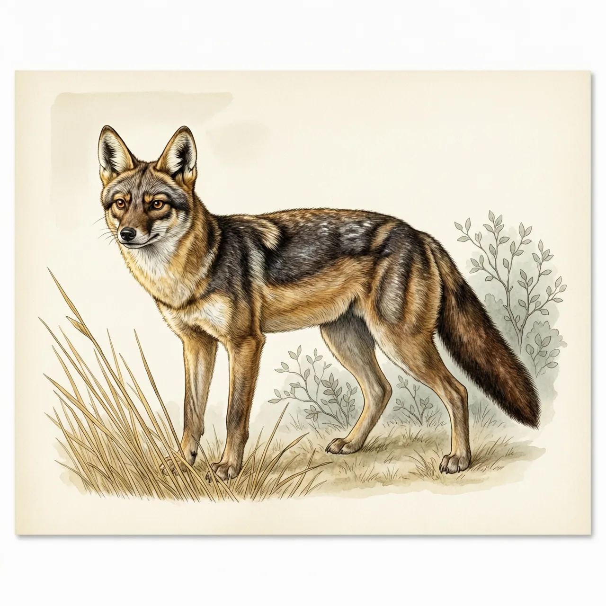
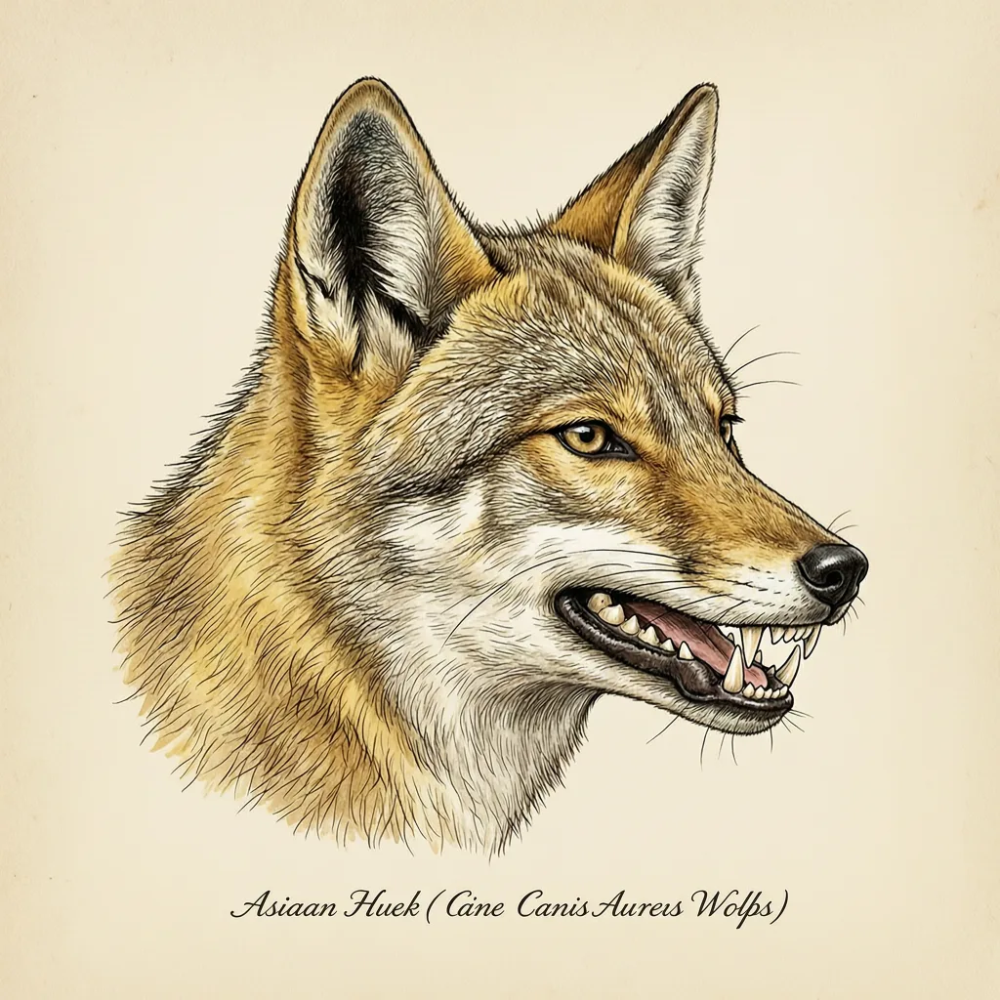

亚洲胡狼是东南欧到南亚、缅甸一带体型最大的胡狼，也是唯一生活在非洲以外的胡狼。它实行彻底的一夫一妻制，性成熟的兄姐会留在父母身边帮忙照看幼崽。食性极杂，既猎捕兔、啮齿类、鸟类和昆虫，也吃果实与腐肉，在印度一些地区还翻人类垃圾。
体长70-105厘米、肩高38-50厘米、重7-15公斤：亚洲胡狼是胡狼里最大的一支，也是唯一不生活在非洲的。它的分布从欧洲东南部一路铺到南亚和缅甸，草原、灌丛和山地都待得下来，山区的个体毛色偏灰。毛短而粗糙，多为黄色到淡金色，毛端褐色，颜色随季节和地区变化。以前非洲的胡狼也算在亚洲胡狼名下，新的研究把这些个体归成了另一个种：金狼。
亚洲胡狼的食谱里没有专一可言：动物占54%，植物占46%。它靠敏锐的听觉定位藏在草丛里的猎物，兔、啮齿类、鸟类、昆虫、鱼甚至猴子都进它嘴里；也猎杀比自己大4-5倍的有蹄类，有时两到五只凑成小群一同猎食。狮子或虎的猎物，它会凑近偷走；大型有蹄类的尸体，五到十八只一起围上来分食。到了印度的收割季节，亚洲胡狼转吃果实；印度和孟加拉的一些地方，它们主要靠腐肉和垃圾过活。
出乎意料的是亚洲胡狼的家庭结构。它们完全是一夫一妻制，而且很多家里还住着一到两只成年帮手——都是上一胎生的、已经性成熟的孩子，留在父母身边不繁殖，等弟妹出生后帮忙照看。幼狼在巢穴里出生，妊娠63日，每胎2-4只，50-90日断奶；初生时重200-250克，约10日睁眼，3个月后吃固体食物，11个月大就性成熟。但性成熟并不等于该离家，留在家里的这一年，正是它们当保姆的开始。
